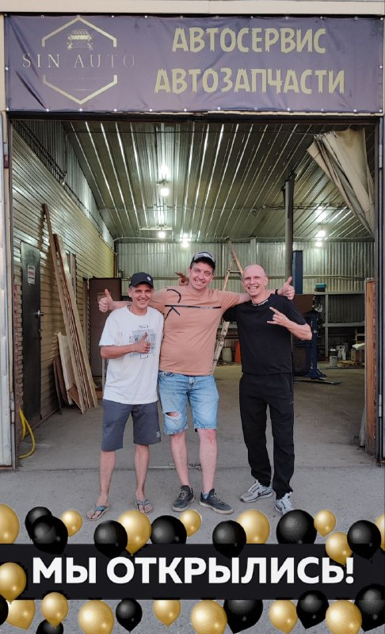
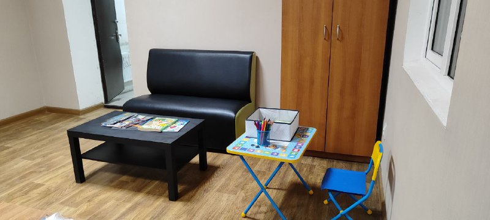

Трамвайная, 15/4
Уфа, ул. Трамвайная, 15/4. Сервис рядом с рынком «Радуга».
- Часы
- Каждый день с 10:00 до 20:00.
- Телефон
- +7 993 133-93-36

Как найти
Ориентир — рынок (ТСК) «Радуга»: от него до сервиса около 350 метров.
Ищите ворота бокса с вывеской «Автосервис, автозапчасти» и шестигранным логотипом Sin Auto, как на фото выше. Точку на карте и маршрут на машине или пешком построят Яндекс Карты и 2ГИС.
Координаты: 54.800835, 56.092322
Пока чиним
Можно подождать в клиентской комнате: диван, Wi-Fi, кино, детский уголок и кофе.
Каналы

Реквизиты
Sin Auto (Син Авто), Уфа, ул. Трамвайная, 15/4.
Защита прав потребителей: Управление Роспотребнадзора по Республике Башкортостан.
Записаться в сервис
+7 993 133-93-36Уфа, ул. Трамвайная, 15/4, рядом с рынком «Радуга». Каждый день с 10:00 до 20:00. Как проехать